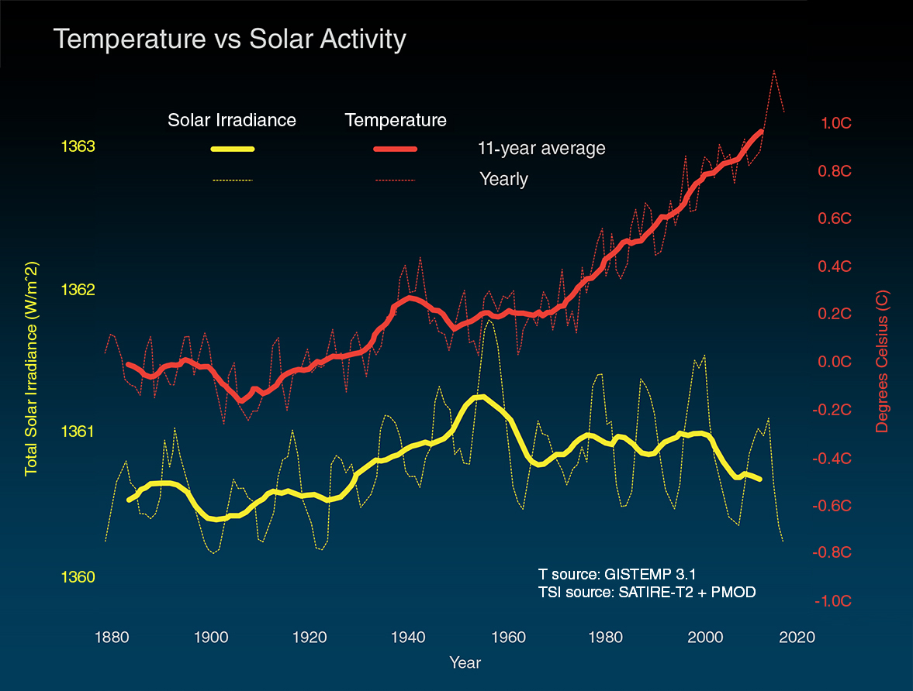

Carbon Dioxide is the greenhouse gas that is the largest contributor to global warming. Humans have increased atmospheric Carbon Dioxide concentration by more than a third since the Industrial Revolution began. Since the Industrial Revolution, temperature levels have risen half a degree celcius, but solar activity has roughly stayed the same.
This small half a degree increase in temperature has a drastic effect on our oceans. Oceans are vital ‘carbon sinks’, meaning that they absorb huge amounts of carbon dioxide, preventing it from reaching the upper atmosphere. Increased water temperatures and higher carbon dioxide concentrations than normal, which make oceans more acidic, are already having an impact on oceans.
Oceans are already experiencing large-scale changes at a warming of 1°C, with critical thresholds expected to be reached at 1.5°C and above. Coral reefs are projected to decline by a further 70-90% at 1.5°C. At a warming of 2°C virtually all coral reefs will be lost. It’s not only a tragedy for wildlife: around half a billion people rely on fish from coral reefs as their main source of protein.
But it’s not too late.
At the Paris climate conference (COP21) in December 2015, 195 countries adopted the first-ever universal, legally binding global climate deal.The agreement sets out a global action plan to put the world on track to avoid dangerous climate change by limiting global warming to well below 2°C.
Of most interest is when cumulative global CO2 emissions exceed the 1 trillion tons of carbon (3.67 trillion tons of CO2) threshold, which according to the IPCC will raise the Earth’s surface temperature to 2°C above the pre-industrial minimum and trigger “dangerous interference” with the Earth’s climate system:
The Fifth Assessment Report of the International Panel on Climate Change (IPCC) quantifies the global maximum CO2 the world can still emit and also have a likely chance of keeping global average temperature rise below 2°C above pre-industrial temperatures. It reports that the goal is likely to be met if cumulative emissions (including the 535 GtC emitted by the end of 2013) do not exceeed 1 trillion tonnes of carbon (PgC).
Unless our current linear trajectory changes, our CO2 levels are guaranteed to hit this 1 trillion ton threshold sometime between 2050 and 2055.